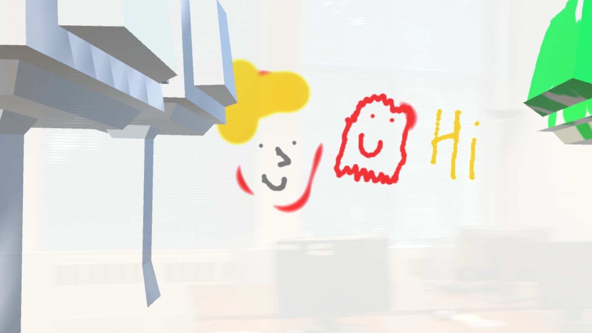
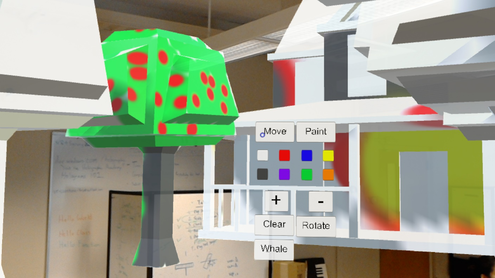

Intro
This week, we wrapped up our application by smoothing out some rough edges in the application and creating a simple scene for the demo.
Progress
One thing that we did was to finish up the advanced menu. The current menu is fairly simple and has everything in 1 box layout. The advanced menu enables the user to hide and show the menu and categorizes buttons such that when a user clicks a button, other buttons will appear/disappear. This allows the menu to be less cluttered and not distract the user when using the menu.
The model scene for the demo consists of a wall, 8 trees and a house as you can see below in the demo images. Users start with trees on both side, the wall towards the back of the user ,and the house in front of the user. We plan on adding more models to the scene though currently we have been encountering a lot of difficulties in this area.
Currently, our work is split up as such.
Radu is working on hooking up the advanced menu to various functionalities.
Panji, Andy, and Thomas are working on creating a better demo scene for the final demo
Difficulties we encountered
The major issue of the week is due to the UV mapping of various models that we had bought from the Unity Asset Store. In order to save space, most models utilize the same UV map for portions of the mesh. For example, a house uses the same UV map for all of its windows. Since our painting module uses a raycast to detect the UV coordinates and then changes the color at the detected UV coordinates, painting at a certain spot sometimes causes multiple paint dots to appear. The solution to this was to manually create new UV maps for each model. While this works, the amount of time consumed per model is still an issue, since we would like to have a large variety of models.
Another issue related to the scene creation is that the models that we create with the new UV map have different sizes when imported to unity. This meant that we would need to scale each model accordingly. However, this affects the brush size and causes paint dots to be of different size on different models (larger paint dot on models that were scaled up more). To resolve this, we will likely do some sort of guess and check for the model size when creating the models in order to minimize the difference in paint dots between models.
Progress Pictures
Drawing faces and writing on the wall
Coloring a tree
List for final demo
Changes for next week
- Create a final scene for the demo that fits within the demo space
- Disable spatial mapping to prevent bystanders from blocking paintable objects
- Better menu, display which mode people are in